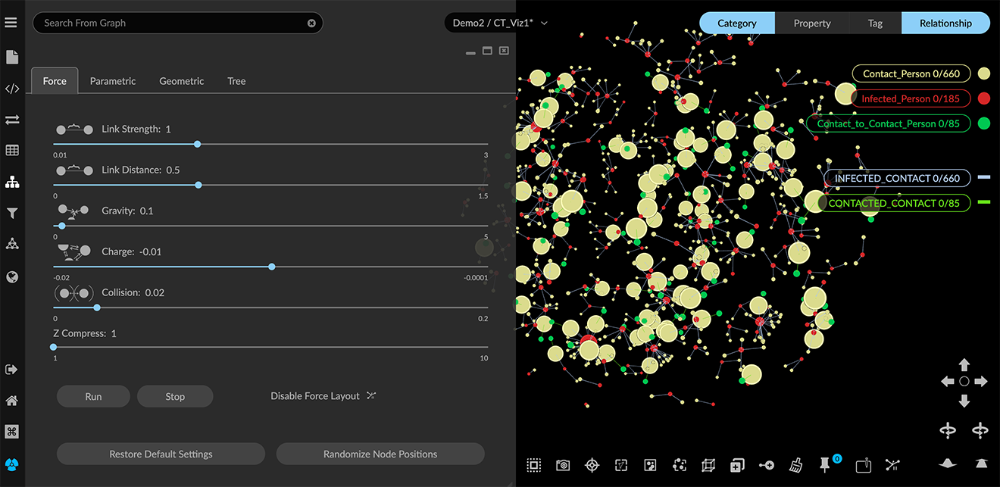
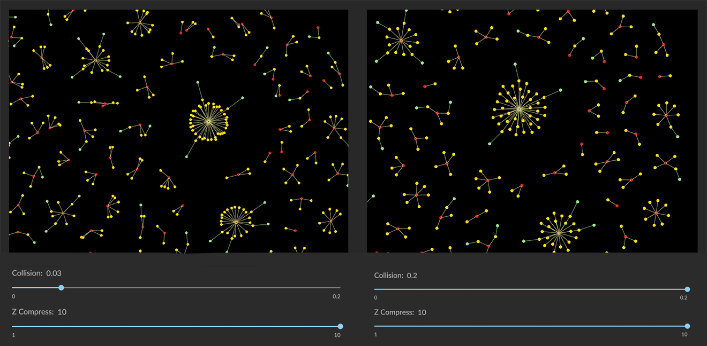
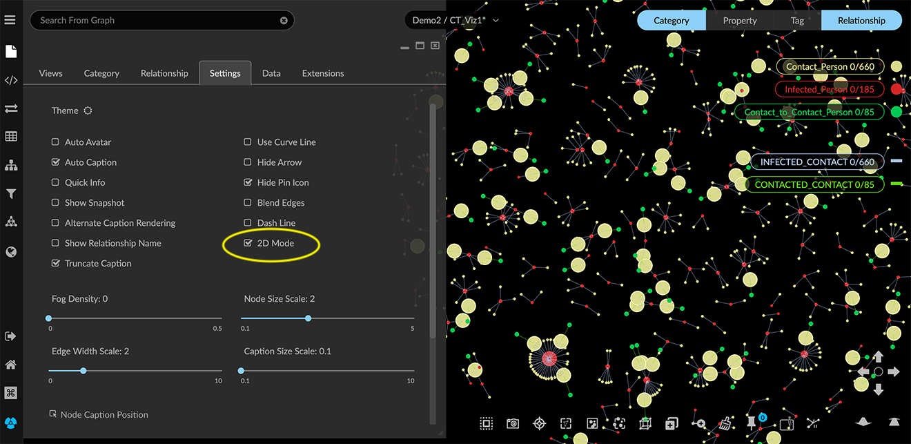
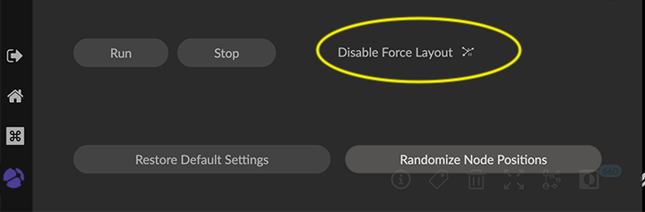

Using Force Layouts A Force directed layout is a rendering of a physics simulation in which each node pushes away from other nodes while edges pull the nodes together. There is no intrinsic meaning to node position or edge length in a force-directed layout. Rather, the rendering is designed to result in a graph that is visually pleasing and reasonably easy to navigate. GraphXR provides a default force-directed layout, but you can: Adjust force layout parameters for the entire graph, and restore default settings. Randomize node positions for all or part of the graph. Temporarily disable force layout for all or part the graph. Run a brief force layout simulation for the entire graph. Adjusting Force layout parameters The Force tab of the Layout panel includes a set of sliders to adjust default layout parameters for the entire graph.  You can adjust parameters as follows: Link Strength. Adjusts how strongly the links (i.e. edges) pull the nodes together. Link Distance. Adjusts the distance between nodes (i.e. edge length). Gravity. Pulls the nodes toward the center of the graph space, that is, the point the view rotates around when nothing is selected. Charge. Adjusts how strongly the nodes push away from one another. Collision. Adjusts the degree to which nodes are allowed to overlap each other. This is especially useful in a 2D layout, to un-stack nodes projected on top of one another. When set all the way to the right, some overlap can still occur.  Z Compress. Compresses nodes on the Z axis to become a flatter, more 2D layout. To project a 3D view to near-2D, set the Z-Compress slider all the way to the rightmost position. You will still be able to rotate the data in 3D. Click the Restore Default Settings button to restore the sliders to their default positions and re-render the default force layout for the selected graph. Any pinned node is excluded from adjustment, and left where it was placed. This applies to nodes you’ve arranged manually in the project space, and to those pinned automatically using a geometric layout. To release pinned nodes, either use the Pin/Release toolbar icon or right-click menu, or the Release button in the Geometric layout panel. Restricting layouts to 2D 3D visualization provides a powerful advantage for exploring high-dimensional data. However, you can switch to 2D mode at any time, or even work exclusively in 2D mode. For example, a flat 2D project space can be useful when creating and sharing views for analytic reports of various kinds. Many of the Geometric layouts do translate well to purely 2D presentation, including Line, Circle, Spiral, and Grid, as well as hierarchical Rings or Trees To set the project space to 2D: In the Project panel and Settings tab, click the 2D Mode checkbox.  Project data are now arranged on a flat plane, and the data cannot be rotated in 3D. In the Force layout tab the Z-Compress slider is no longer displayed. The 3D Cube, Spring, and Sphere geometric layouts are no longer available. Randomizing node positions In Force layout, nodes are rendered in randomized positions. The Randomize Node Positions button lets you render a different random arrangement either for selected data, or all data if no data are selected (except for any pinned nodes). To randomize a force-directed layout: Select nodes using any method. If no nodes are selected, all node positions are randomized, except for any pinned nodes. Make sure that the label next to the icon reads Disable Force Layout. This means that force layout is currently enabled, and your selection will be randomized according to the current force layout parameters.  Click the Randomize Node Positions button to render a different random force layout for your selection. Disabling Force Layout You can disable the force layout for all or part of the graph. This causes selected nodes to be rendered in a random, more compact arrangement that does not use a force-directed simulation. This can help you focus quickly on subgraphs of interest. To disable force layout and randomize node positions: Select nodes using any method. Click the force layout icon. The text next to the icon should now read Enable Force Layout, which means that force layout is currently disabled. Click the Randomize Node Positions button to display a different random order for your selection. The selected data are randomized in a more compact layout, while the data not selected remains in force layout. If no data are selected, all node positions are randomized in a non-force layout, except for any pinned nodes. Click the icon next to Enable Force Layout at any time to return the selected nodes to force-directed layout. Using Run and Stop With force layout enabled, you can click Run to run a brief (1- or 2- second) force layout simulation for the entire graph. Click Stop to freeze the layout when you see a rendering you like.